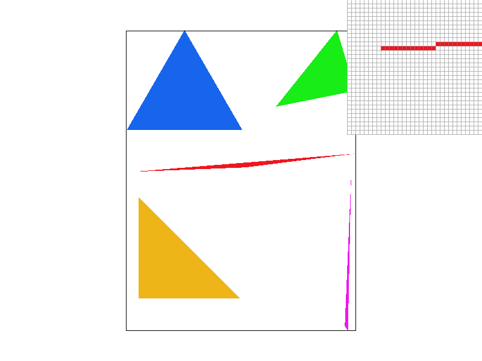
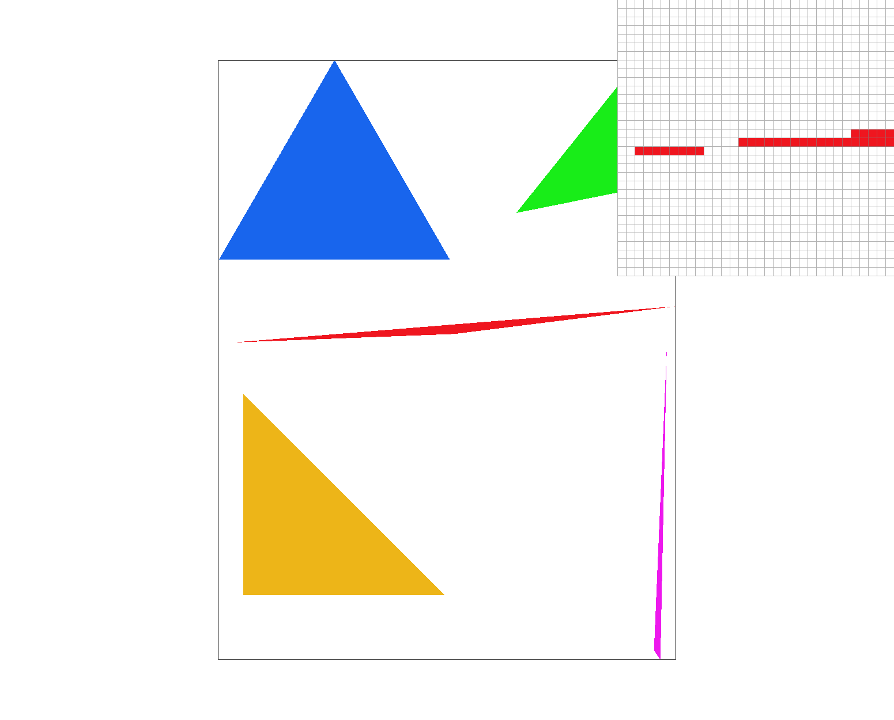
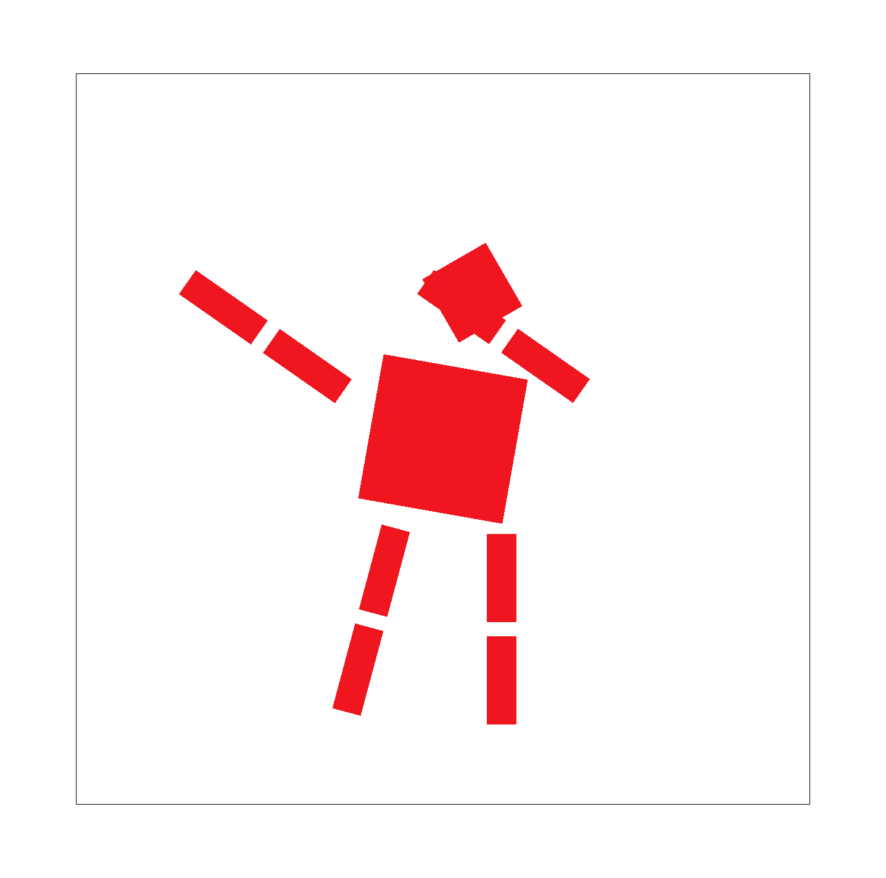
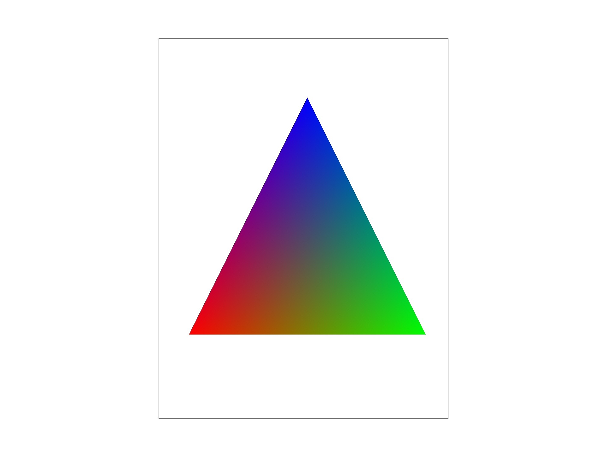
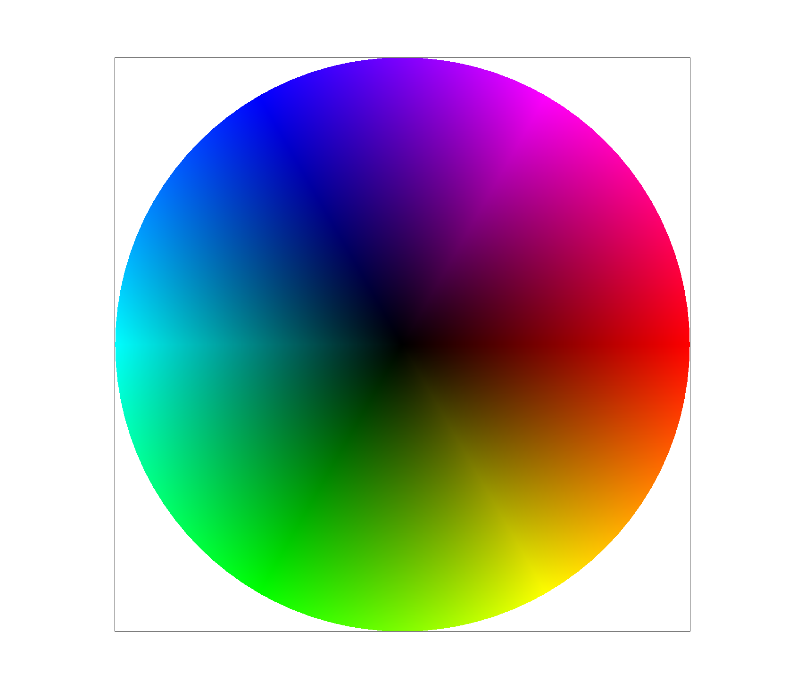
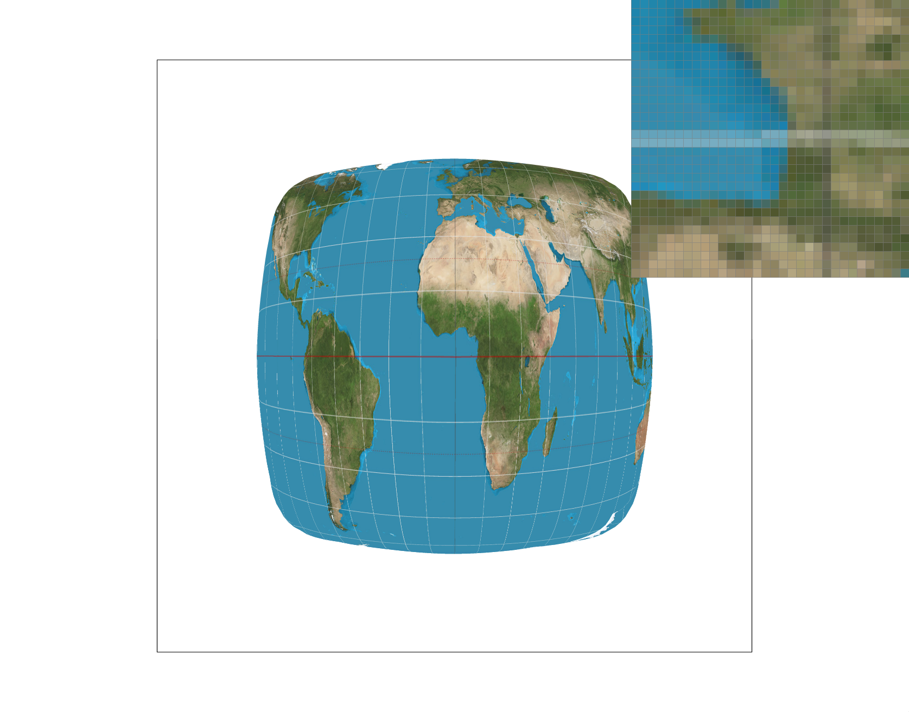
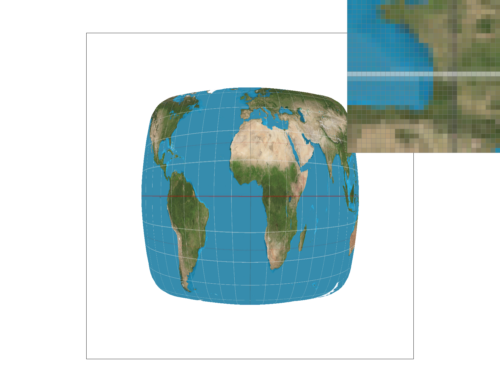
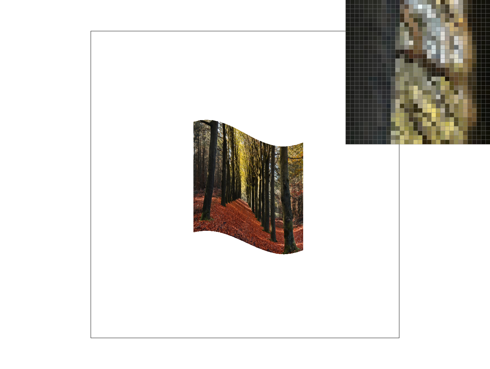
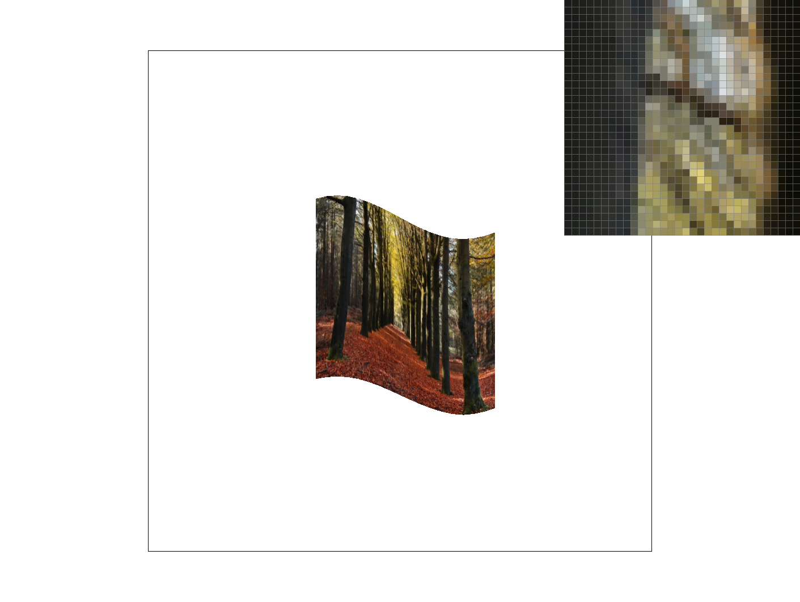

In this homework, I've implemented a basic version of the rasterization section apart of the overall rasterizaton pipeline. It started from just implementing the functions to generate basic triangles, but quickly grew to include additional features to counter antialiasing and read from a texture map. This includes features such as supersampling, pixel sampling plus barycentric coordinates, and level sampling. All of these features combined created a working system that can take a continuous image and rasterize it onto the screen, all while minimizing any aliasing that could ruin the rendering of the image.
Overall, I found this homework to be extremely insightful to how rasterization works in the technology I use everyday. In particular, I found task 2 and 5/6 to be the most interesting, though technically the hardest. The introduction of new data structures such as the samplebuffer, framebuffer, and mipmap textures confused me a lot initially, as even though I understood conceptually what they were trying to achieve, the techniques such as using subpixels and interpolation between uv coordinates were easy said than done. Even though, they were the most valuable tasks as these techniques I believe will carry onto other elements of computer graphics.
To rasterize triangles, I began by working towards generating the bounding box of the triangle in order to obtain
the maximum and minimum x and y value coordinates needed for the triangle. To do this, I took the
min/max of all of the y's and x's, then proceeded to take the floor/ceil respectively to align the boundaries
on the corner of the pixels.
With the boundary box for my triangle, I then set up a double for loop to iterate through each
pixel within the box. I defined x and y both as floats starting at minY/minX to a maximum of maxY/maxX, increasing
by increments of 1. However, the sample coordinates sx/sy are increased by 0.5 each, to represent the center of the pixel rather
than its corner.
By being able to access the sample points of the boundary box, the final step of my rasterization process was to implement the Three Line Test to check
if a sample point is inside of the triangle or not. To do this, I calculated the 3 line equations l0/l1/l2 by multiplying their vectors and normals together.
And in a final if statement, I check if the sample point is inside of the triangle by seeing if they all the line equations are less than 0 or equal to 0 to render the edges.
An issue that were present with my original code was found in test6 as only a few of the triangles where being rasterized. This was because initially, I had only been
denoting sample points as inside for clockwise winding triangles. This was from my if statement, where I only checked if (l0 >= 0 && l1 >= 0 && l2 >= 0). However,
to properly check clockwise winding triangles, I needed to also check if (l0 <= 0 && l1 <= 0 && l2 <= 0) was true.
This algorithm is no worse than one that checks each sample within the bounding box as the for loops are bounded by it. To restate, I defined my boundary box to be the rectangle
denoted by the maxX/maxY and the minX/minY of the three points of the triangle. This creates the smallest bounding rectangle. The for loops then iterates
through this box pixel by pixel, meaning that my algorithm is exactly equivalent to checking each sample within the bounding box, no worse.
|

|
To implement my supersampling algorithm, I first began by altering the this->sample_buffer.resize(...) in both set_sample_rate and set_framebuffer_target.
This involved multiplying the width*height by sampling_rate. This is necessary as the sampling buffer needed to be the appropriate size (ie multiplied
by the sampling rate) whenever the buffer was updated, whether it was via changing the sampling rate or changing the dimensions of the framebuffer. Without this, there would be an
inconsistency whenever something changed, preventing any supersamping from occuring.
The next element of my supersampling algorithm involved changing my rasterize_triangle function in order for it to properly read supersampled point and store it into
the upscaled samplebuffer memory. To read the supersamled points, I introduced two new for loops that would further break each pixel down into smaller subpixels subY and subX.
The for loops were initialized equal to 0, incrementing by 1 up until the square root of the sampling rate. This is because the square root
is equivalent to the horizontal/vertical dimensions of each individual pixels, meaning that the for loop would accurately iterate through
each pixel's subpixels. The subpixels could then be inputed into the line equations just like in the basic rasterization to identify
whether or not they are inside the triangle.
The next step was storing the color values into the supersample buffer, sample_buffer and this is where I faced the most difficulties.
At first, I didn't know whether I should store the subpixels all together or insert them in order as they appear in the sampled image
(ie splitting subpixels such that they weren't right next to each other in the buffer but rather as they appear line by line). I first tried
to implement the latter by changing the order of the for loops such that it was iterating through y, subY, x, and then finally subX.
However, I found it much more difficult to implement further and less viable if sampling was recursively done, so I decided to switch to
the former strategy. To implement it, I used sample_buffer[(y*sample_rate*width) + (x*sample_rate) + (subY*sqrtSampleRate) + subX]
to index to the appropriate spot in the buffer.
The final element of my algorithm was in resolve_to_framebuffer. Similarly to the previous step, I introduced two new for loops
that would iterate through all of the subpixels subY/subX. The function would grab the color value stored within the sample buffer
at each subpixel, summing together the color values that make up the original pixel. The rgb values would then be divided by the sampling rate to determine the average value
and it would be sent to the framebuffer to be displayed.
Overall, supersampling is extremely useful for reducing aliasing. Without it, sharp edges, also known as high frequencies, would be
noticable even on originally continuous images. Additionally, supersampling is useful as it is a much cheaper alternative than
raising the resolution, which would also reduce aliasing. For instance, in my algorithm for supersampling I only made a few minor modifications
to my rasterization pipeline. These modifications included the rasterization functions that generated the image element by element (via
rasterize_triangle and fill_point) as well as the translation from the samplebuffer to the framebuffer (via
resolve_to_framebuffer). With these modications, my supersampling algorithm were able to antialias the triangles by breaking
each pixel into multiple subpixels depending on the sampling rate in rasterize_triangle. In resolve_to_framebuffer,
I was then able to average the subpixels together, allowing the colors of the pixels to interpolate between white and its assigned color, creating
a blurring effect to remove the aliasing in the triangles.
|

|
|
|
The impact the supersampling has on the images are shown above. As the sampling rate is increased, the aliasing of the triangles is drastically reduced. This is because a higher sampling rate means more subpixels and a greater blurring effect as a result of the pixel's color being the average of its subpixels.
|

|
In the image above, I applied multiple different transformations to get the cubeman to be dabbing. More explicitly, it first involved both altering the translation and rotation of the head in order for it to be closer to the right arm. For the torso, I rotated it slightly to show mimic how the body wouldn't be perfectly straight. For the left and right arms, there were changes to the rotation in order for them to be pointing up and to the right, with slight modifications to the translation to align the arms properly with the body. Finally, the left leg was slightly tilted to create a sense of balance for the cubeman.
In computer graphics, barycentric coordinates are a new coordinate system present inside a triangle that
has its coordinates (alpha, beta, gamma) defined in relations to the vertices of the triangle.
These three values represents the proportional difference between a point inside of a triangle and the edge opposite
of its respective vertex. For instance, in the image below lets label the red vertex A, the blue vertex B, and the
green vertex C. Each vertex (A, B, C) will correspond to a greek variable (alpha, beta, gamma)
respectively. In this example, alpha for a point within the triangle would be the distance from the point to the edge between
B and C.
|

|
Barycentric coordinates provide an easy way to interpolate within a triangle as it results in 3 different variables that represents how close a point is to a vertex, changing the vertex's "influence" on the point. In the triangle above, each vertex is assigned a color, allowing the internal points to be interpolated between the 3 colors depending on its position relative to them.
|

|
At a high level, pixel sampling is where the color of pixels from a texture map (known as texels) are sampled from the original image and then rasterized to be displayed on a screen. However, the mapping from the grid-like texture to a discrete triangle in the framebuffer is harder to implement in practice, involving a bit more details and work.
For my implementation, I began first by editing rasterize_textured_triangle and copying over
my algorithm from rasterize_interpolated_color_triangle. This means that I still find the
boundary box for the triangle, iterate through its pixels/subpixels, and still calculate the barycentric
coordinates for the interior points of the triangle. Unlike in the previous task though, the resulting color
are not longer just the interpolated values from the three vertices, so I removed that calculation (
Color color = alpha * c0 + beta * c1 + gamma * c2;).
Instead, I used the provided uv coordinate mappings provided for each vertex and interpolated between them
to find the uv mapping each point had, basically relating the points in the triangle to its corresponding
point in the texture. In code, this looked like float u = u0 * alpha + u1 * beta + u2 * gamma; for
the u value and exactly the same for the v value. With u and v, I now had the uv coordinate in the form
of a vector to extract from the texture map.
Another element of pixel sampling is how you go from the uv coordinate calculated through interpolation to its corresponding texel as the uv coordinate likely won't map directly to a texel. Instead, it will typically map to an point in between them. There are multiple ways to go about this: nearest and bilinear sampling.
The simplest strategy is nearest sampling. To figure out what texel's color value to grab, you just
select the nearest texel to the calculated uv coordinate. In Texture::sample_nearest,
I implemented this by rounding the u and v coordinates as the texel coordinates are defined as integers.
This then gave me the coordinate of the nearest texel from which I could extract its color with
mip.get_texel(tx, ty). But while it is extremely efficient and simple to implement this
sampling, it comes at the detriment of accurately representing the image as it doesn't take into account
the continuous nature of most images.
Bilinear sampling takes another step closer to trying to represent the continuous image through
interpolation of the texels. It involves finding the 4 closest texels (through floor/ceil)
and performing 3 separate interpolations. The first 2 occur in 1 dimension, in my case horizontally, to figure
out how much influence the left and right texel have on the color. The final interpolation occurs between
the previous two results of interpolation, calculating how much influence the top and bottom texels have.
This results in an blurring effect, meaning that the color grabbed from the texture map appear more continuous.
|
|

|
|

|
|
In the four images above, the effects of sampling rate and sampling methods can be seen. As seen in previous tasks, as sampling rate increased, aliasing decreased as pixels in the framebuffer became the averages of the nearby texels' colors. Additionally though, the difference between nearest sampling and bilinear sampling can be explicitly seen. In the cases where sampling rate was held constant, smaller features of the image became more apparent and less jagged with bilinear sampling. This can be seen with the white latitude line which appear nonexistent with nearest sampling, but become visible again with bilinear sampling. This would be the case with any extremely high frequency area of the image as if nearest sampling skips over a texel when choosing a different "nearest" texel, it would become very obvious in the rendering.
Level sampling is where, in addition to sampling the texels based off of the uv coordinates generated from the framebuffer, you also figure out which mipmap level of the texture to choose from. The different levels represent a different amount of quality with higher levels meaning a smaller resolution and less details. While this may not seem useful at first, level sampling serves two major purposes. For one, it helps with performance as when images are smaller and/or farther away, viewers won't be able to tell the difference between high-detailed textures and slightly worse ones. By switching in the high level mipmaps, loss computation is required. More importantly though, level sampling helps reduce aliasing on those same images farther away. If the framebuffer is much smaller than the texture map, the image will be undersampled and texels may be skipped, creating more jaggies and a much more discrete representation than needed.
For my level sampling, I first began by updating rasterize_textured_triangle to utilize Texture::sample and
SampleParams. In my previous implementation, I directly called sample_nearest and
sample_bilinear as I just defaulted level to 0. These updates include defining SampleParams params;, assigning
it the current lsm/psm/uv, and finally calculating p_dx_uv and p_dy_uv. These are 2D vectors that represent the uv value one
point to the right and one point downwards, allowing the estimation of how much the uv coordinate changes.
To implement Texture::sample, I first had to define the helper function get_level. This function takes in
a SampleParams and estimates what would be the best mipmap level given that information. In particular, my implementation takes
p_uv, p_dx_uv, p_dx_uv and difference vectors between between the actual uv coordinate and its neighbors. These vectors
give a sense of scale for the texture mapping allowing for the estimation on which mipmap level to use. The bigger the maximum
distance vector is the "farther" away the image will be, meaning a higher mipmap level.
With get_level implemented, Texture::sample can be implemented. It involves an outer if statement that checks
sp.lsm to see which level sampling method is being used (zero, nearest, linear), and an inner if statement to check sp.psm to check
what pixel sampling method to use (nearest, linear). Whil the pixel sampling logic is pretty much the same as the previous task, besides
the new input of the level variable, the logic given the level sampling method still needs to be added.
If lsm == L_ZERO, no further calculation is needed as level is set to 0, meaning that higher resolution texture will be used.
If lsm == L_NEAREST, get_level would then be called and rounded to obtain the level most appropriate for the
framebuffer size. Finally, if lsm == L_LINEAR, get_level would be called twice in order to get two closest levels
to the calculated value through the use of floor and ceil. The weighted sum of the two associated colors is then sampled instead.
An issue faced throughout this implementation was that in certain cases, my nearest and linear implementations for level sampling would break,
causing a magenta tear in the rendered image. After some more analysis of my original logic, I realized that these tears were caused by
get_level calculating invalid levels (ie levels equal to mipmap.size()). In order to fix this, I decided to
use the function clamp in order to bound the mipmap levels to valid ranges, resulting in no more tearing.
When comparing pixel sampling, level sampling, and supersampling in general, multiple tradeoffs can be seen. In terms of speed, while the differences are major as the svgs aren't the largest, pixel sampling and level sampling appeared to be much faster than supersampling. Additionally, supersampling seemed to also take the most memory usage, though in return it also appeared have one of the greatest antialiasing effects even on lower sampling rates like 4 or 9. This makes sense from a technical standpoint as supersampling requires maintaining a much larger sample buffer, but mimics a higher resolution as a result of that. On the other hand, there is less of a memory and speed difference between level and pixel sampling, though pixel sampling is still wins out in both regards. While level sampling requires more memory to store mipmaps and more performance time to calculate the levels, pixel sampling doesn't need any additional memory and only needs to interpolate between a few uv coordinates. Evidently though, level sampling has a much greater impact on antialiasing, with even P_LINEAR sampling barely helping at times.
|
|
|
|

|

|